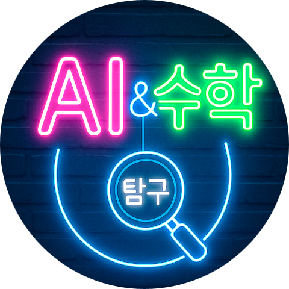
인공지능 수학 이미지 탐구 활동
교과서를 따라 관련 활동을 클릭해 체험해 봅시다.
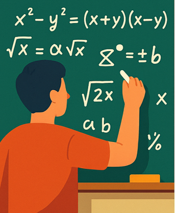
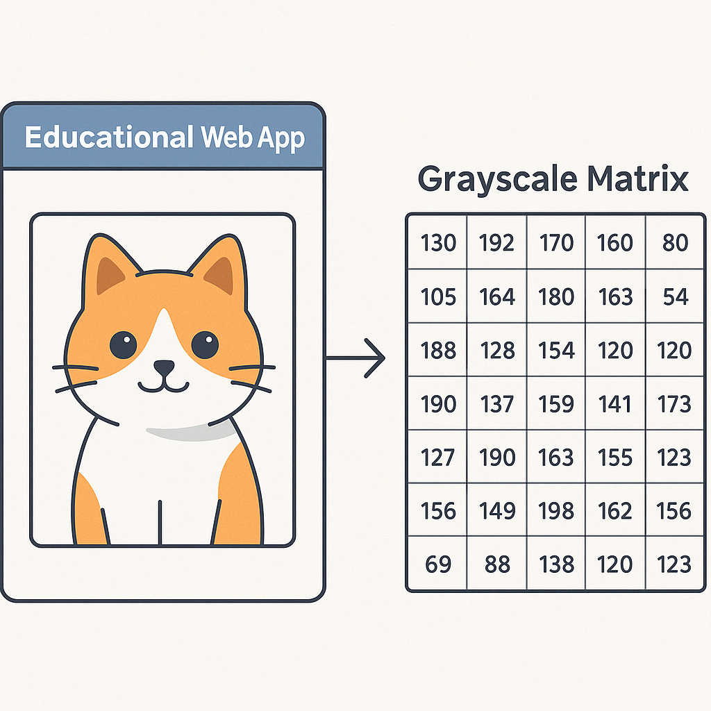
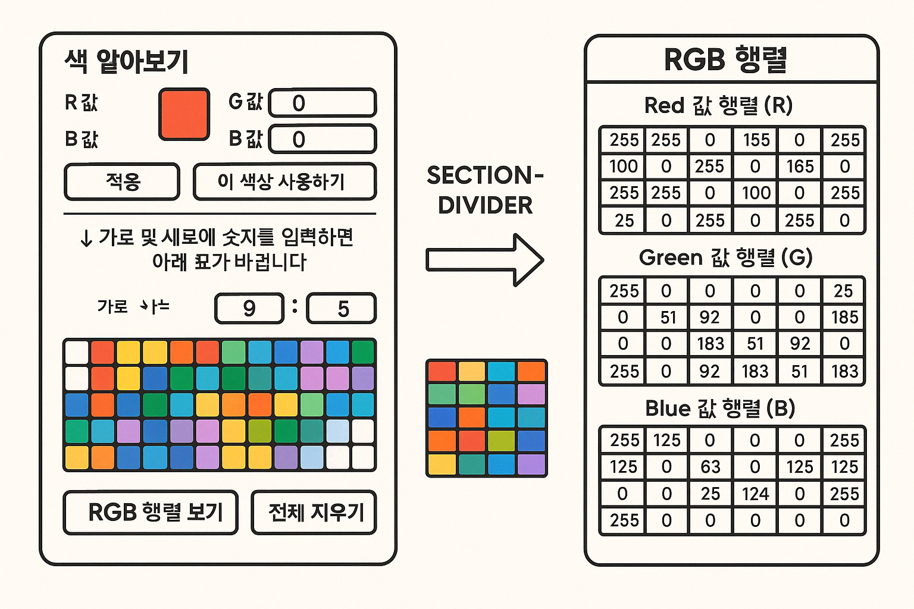
RGB 데이터 탐구하기
우리가 보는 디지털 화면의 색은 R, G, B 세 가지 색의 조합입니다. 이 활동에선 셀을 칠하고 클릭하며 각 픽셀이 어떤 RGB 값으로 구성되는지 직접 확인해봅시다.
살펴보기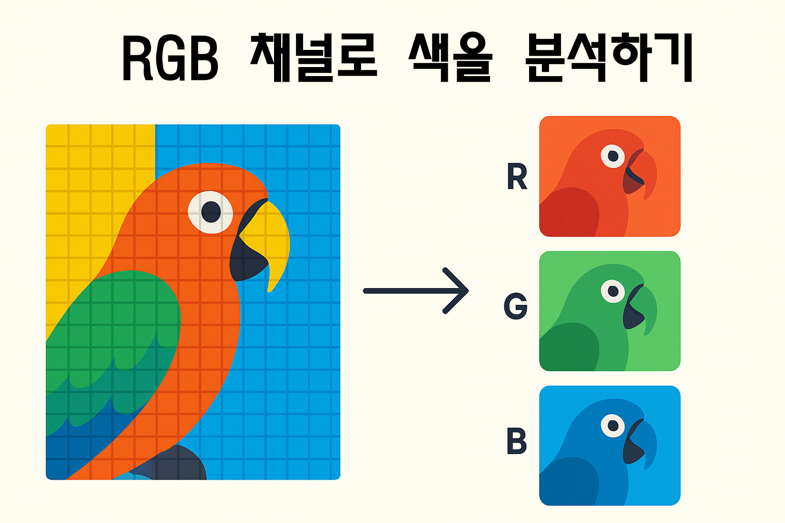
RGB채널 탐구하기
다양한 색을 만드는 RGB 값을 직접 조작하며, 각 색의 수치가 행렬로 어떻게 표현되는지 확인해보세요. 감각적 시각에서 수학적 구조로 연결되는 탐구를 경험할 수 있습니다.
살펴보기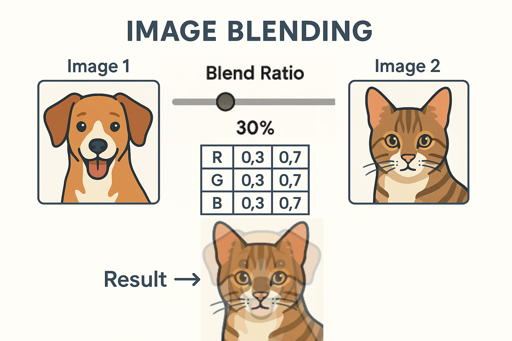
이미지 합성 활동
두 장의 이미지를 혼합해 결과 이미지를 만들어보는 활동입니다. 혼합 비율(Blend Ratio)을 조절하면 두 이미지가 얼마나 섞일지를 결정할 수 있습니다.
살펴보기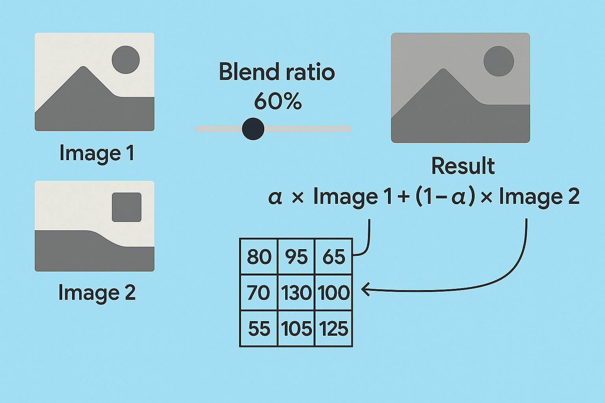
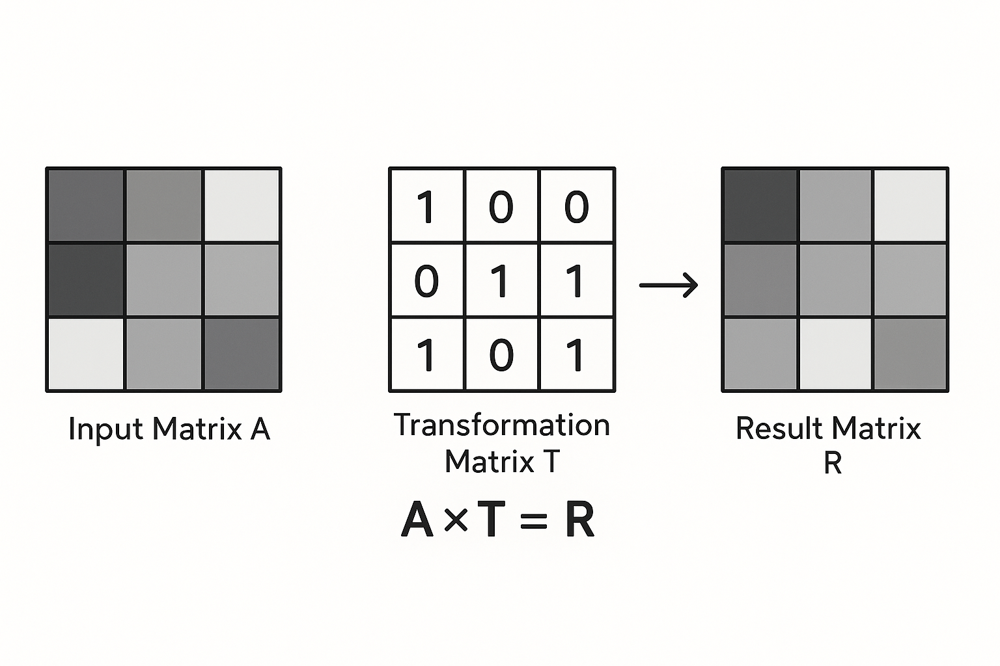
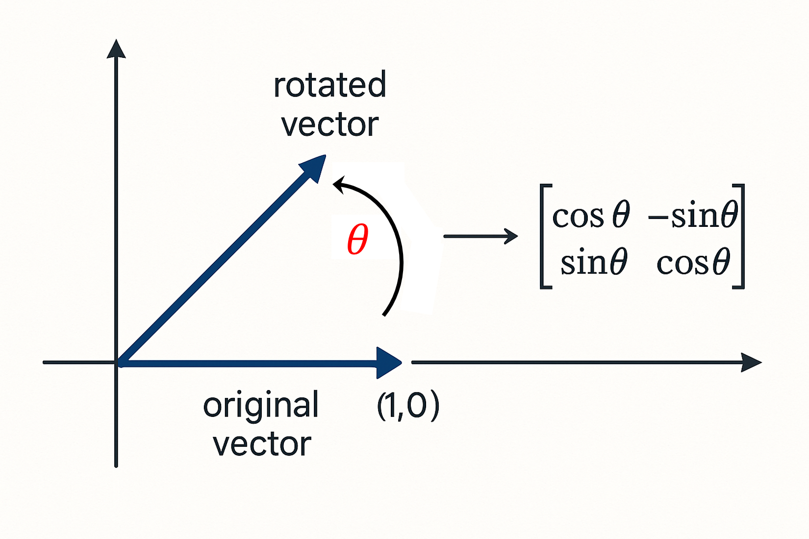
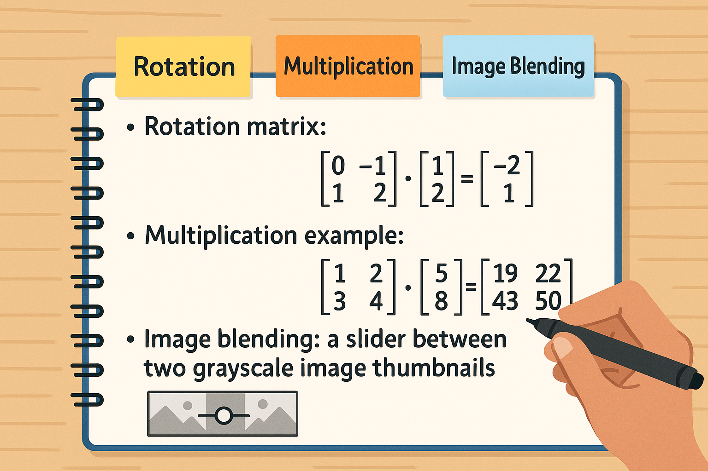
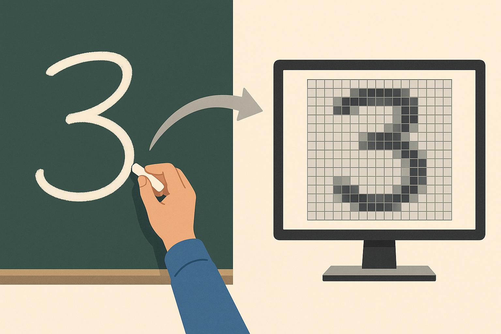
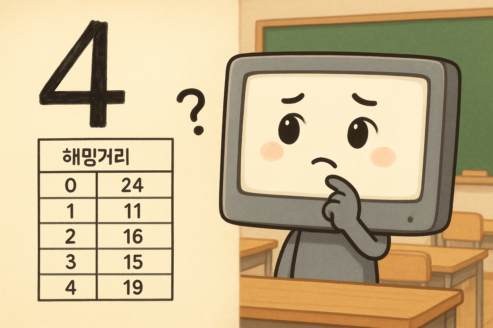

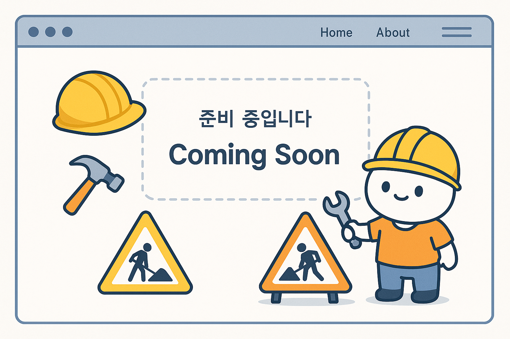
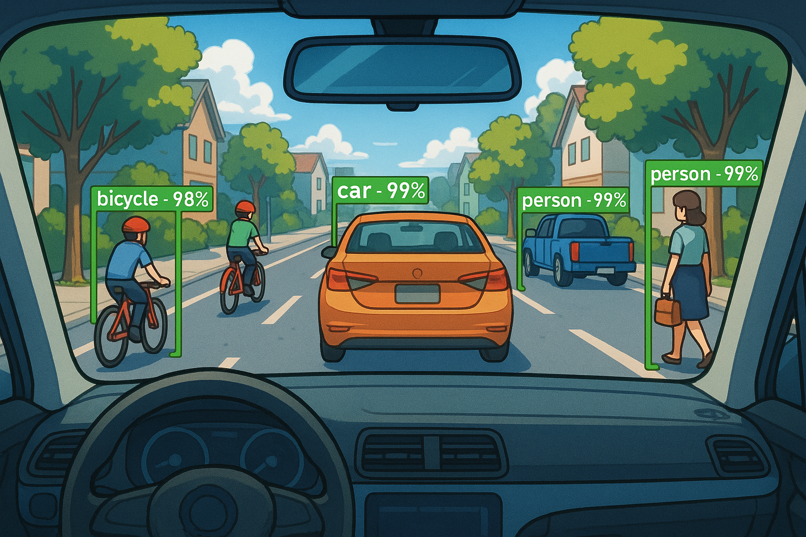

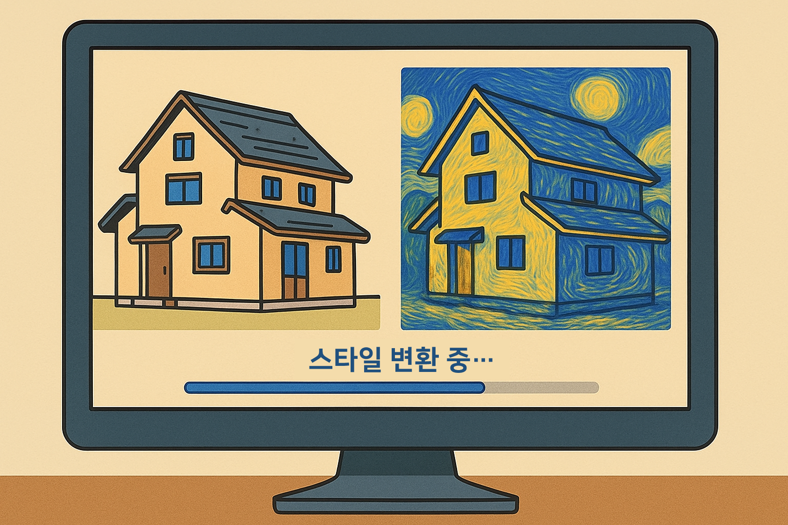
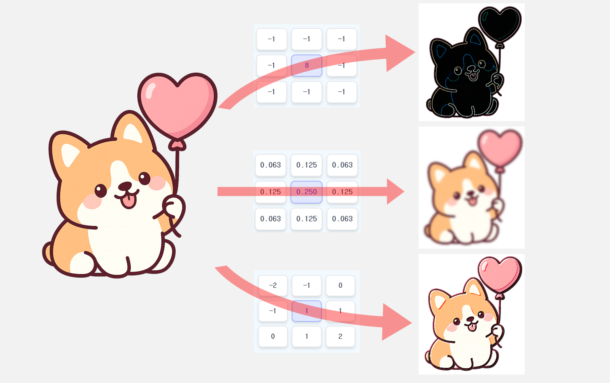
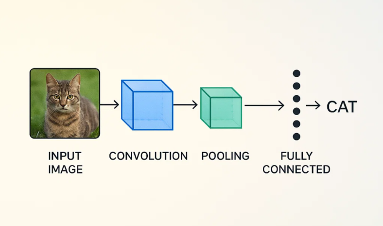
CNN 단계 체험
이미지를 업로드하면 합성곱, 활성화, 풀링 등 CNN의 주요 단계를 한눈에 시각적으로 체험할 수 있습니다. 필터가 어떻게 특징을 뽑아내고, 단계별로 이미지가 어떻게 변하는지 직접 확인해 보세요.
살펴보기